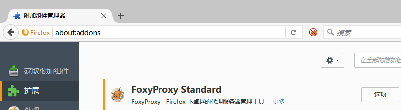
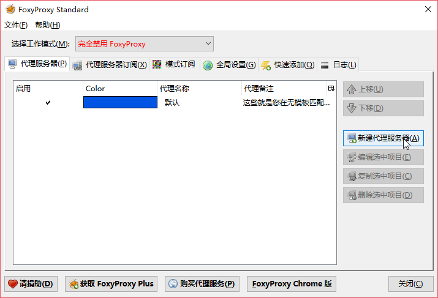
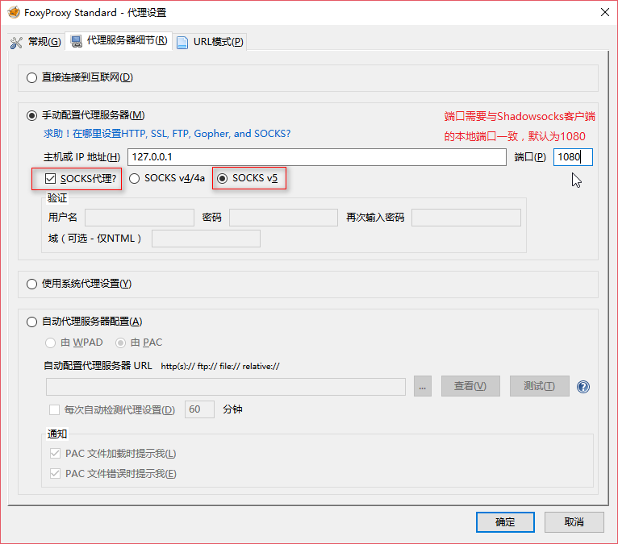
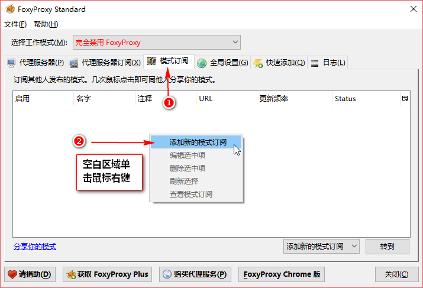
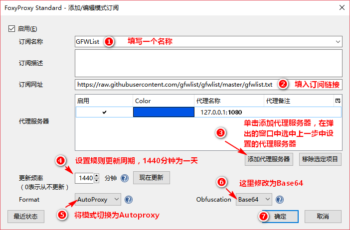
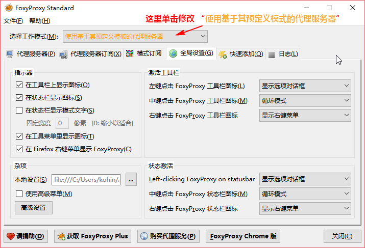
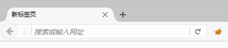
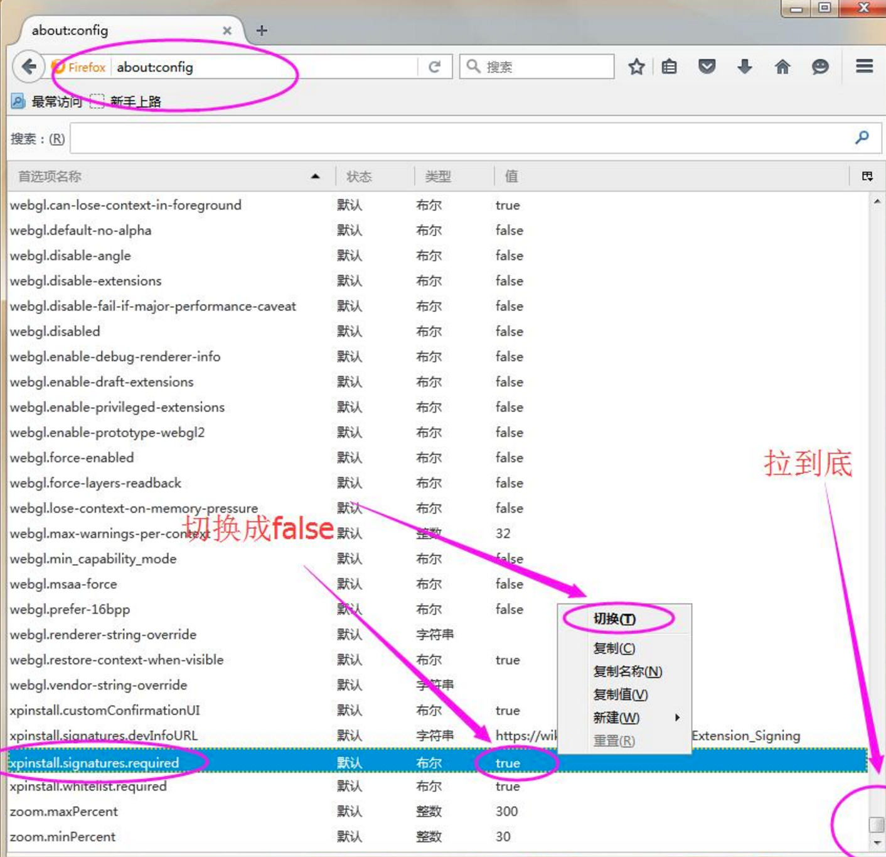

Firefox 配合 GFWList 实现自动切换代理 （安装 Foxyproxy-standard 扩展）
首先，您应该拥有一个 bluevpn pro 账号，然后再简单配置一下客户端，即可畅享网络，正版 bluevpn pro 账号从 这里 获得。
继续阅读您需要按上面方式配置好 Shadowsocks 客户端，并且设置好系统代理模式。
目前因为 Firefox 插件 AutoProxy 的作者已经很久没更新了，导致该扩展在最新版的 Firefox 扩展上已经无法订阅 GFWList 规则，所以不能正常使用。 使用 foxyproxy-standard 扩展，可以替代实现其功能。
如需配置 Shadowsocks 客户端 Windows 请参考Windows使用教程
安装扩展
- 首先前往 https://addons.mozilla.org/zh-CN/firefox/addon/foxyproxy-standard/ 安装 foxyproxy-standard 扩展
- 安装后重启 Firefox ，通过单击地址栏右侧 小狐狸 图标或者是 Firefox 附件组件 > 扩展 页面 foxyproxy-standard 的选项按钮打开扩展的设置界面，如图


- 在设置界面 单击新建代理服务器 ，打开添加代理服务器的页面，按照下图所示添加一个 地址为 127.0.0.1 端口为 1080 的 socks v5 的代理

- 然后在设置界面单击模式订阅，再空白处单击鼠标右键，选中添加新的模式订阅

- 在添加订阅的界面，按照如图所示添加一个 GFWList 的订阅。 链接填入下面这个 https://raw.githubusercontent.com/gfwlist/gfwlist/master/gfwlist.txt

- 返回最开始的设置界面，将工作模式设置为 使用基于其预定模式的代理服务器

- 测试代理是否可用，当网站经过代理时，地址栏的小狐狸会旋转，而不经过则不会转动

注：可以通过鼠标中键单击地址栏的小狐狸图标切换代理模式。
包括 不适用代理（带禁止图标的小狐狸）、自动模式、全局模式。
请按照自己需要的模式选择使用。
~安装插件的时候提示 火狐浏览器安装插件的时候提示此附加组件无法安装，因为它未经验证
请在地址栏输入about:config 后 进入 修改 xpinstall.signatures.required 为 false
具体看下图

